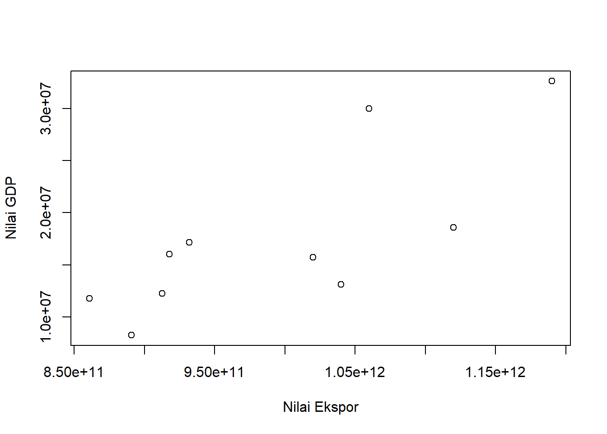
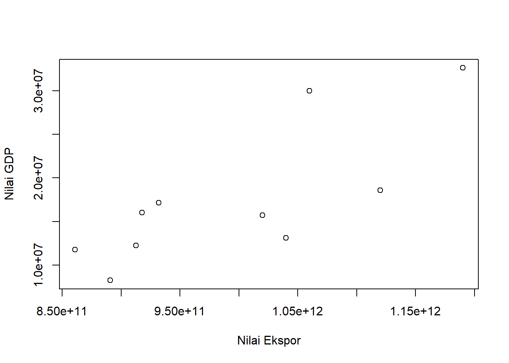
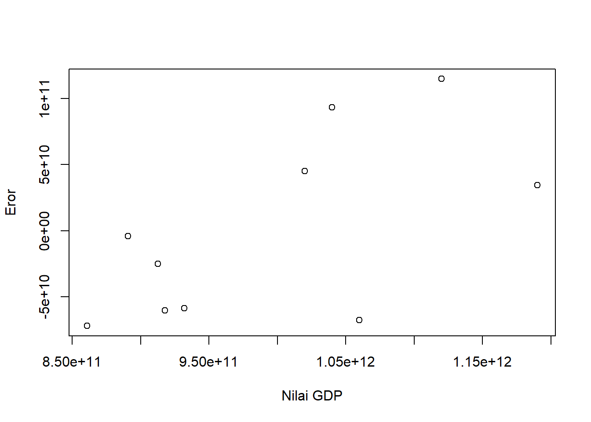

library (readxl)
dat<-read_excel('Latihan.xlsx')
reg1<-lm(Y~X,data=dat)
plot(dat$Y,dat$X,xlab="Nilai Ekspor",ylab="Nilai GDP")
Metode Penelitian Politeknik APP Jakarta

Secara umum perdagangan internasional merupakan sarana untuk melakukan pertukaran barang dan jasa internasional. Perdagangan internasional telah mengalami pertumbuhan dan berkembang secara drastis. Perdagangan internasional ini menyebabkan adanya kerjasama internasional yang terjalin antar negara, kegiattan ini merupakan elemen penting dari proses globalisasi. Membuka perdagangan dengan berbagai negara di dunia akan memberikan keuntungan dan membawa pertumbuhan ekonomi dalam negeri, baik secara langsung maupun tidak langsung.
Di Indonesia, proses perdagangaan internasional berperan sangat penting. Perdagangan internasional adalah cara yang dilakukan setiap negara untuk bekerjasama dalam bidang jasa atau barang, dari tahun ke tahun kegiatan ini semakin tumbuh dan berkembang di segala bidang. Sehingga hal ini menjadi bagian terpenting dari proses globalisasi.
Setiap negara, salah satunya Indonesia pasti memiliki perkembangan ekonomi yang ditentukan dari Produk Domestik Bruto (PDB) atau seringkali disebut Gross Domestic Product (GDP). Menurut Badan Pusat Statistik, PDB pada dasarnya merupakan jumlah nilai tambah yang dihasilkan oleh seluruh unit usaha dalam suatu negara tertentu, atau merupakan jumllah nilai barang dan jasa akhir yang dihasilkan oleh seluruh unit ekonomi.
Penulis membatasi penelitian ini dalam ruang lingkup:
Penelitian yang dilakukan oleh penulis ini bertujuan untuk mengetahui kondisi ekspor migas yang dimiliki Indonesia sehingga dapat mempengaruhi GDP negara Indonesia, selain itu peneulis melakukan penelitian ini dengan tujuan untuk memenuhi tugas ujian akhir semester 3 mata kuliah metodologi penelitian. Penulis juga berharap penelitian ini akan memberikan manfaat berupa:
Jurnal berjudul “Analisis Ekspor Migas Indonesia Terhadap Nilai GDP Indonesia” dibuat dengan topik yang merujuk pada fakta bahwa tersedianya sumber daya alam migas yang mumpuni di Indonesia. Sebagaimana hal nya dengan komoditi migas di Indonesia, komoditi ini merupakan salah satu komoditi unggulan indonesia yang banyak sekali memberikan pengaruh pada GDP Indonesia. Saat ini, ekspor migas mengalami kondisi yang beragam, mulai dari meningkat nya nilai ekspor atau menurun nya nilai ekspor komoditi tersebut.
Kondisi ekspor migas selama 9 tahun terakhir ini banyak sekali mengalami perubahan, dari tahun ke tahun nya kondisi ekspor migas di Indonesia mengalami penurunan, hal ini terjadi dikarenakan cadangan tambang migas ini semakin menipis hingga menyebabkan penurunan nilai ekspor migas tersebut. Di tahun 2018, Indonesia terbukti memiliki cadangan minyak bumi sekitar 3,3 miliar barel, dengan tingkat produksi mencapai 700.000 hingga 800.000 (bph) dan teknologi hanya dapat mengambil 40-50 persen cadangan minyak tersebut. Nilai ekspor migas inilah yang mempengaruhi pertumbuhan ekonomi negara Indonesia dari tahun ke tahun.
| Tahun | Nilai Ekpor Migas | GDP Indonesia |
|---|---|---|
| 2013 | 32.633,2 US$ | 1.190.000.000.000 |
| 2014 | 30.018,8 US$ | 1.060.000.000.000 |
| 2015 | 18.574,4 US$ | 1.120.000.000.000 |
| 2016 | 13.105,5 US$ | 1.040.000.000.000 |
| 2017 | 15.744,4 US$ | 1.020.000.000.000 |
| 2018 | 17.171,1 US$ | 931.880.000.000 |
| 2019 | 11.789,3 US$ | 860.850.000.000 |
| 2020 | 8.251,1 US$ | 890.810.000.000 |
| 2021 | 12.247,4 US$ | 912.520.000.000 |
Sumber: Badan Pusat Statistik (BPS) dan World Bank
Plot Nilai Ekspor dengan Nilai GDP
library (readxl)
dat<-read_excel('Latihan.xlsx')
reg1<-lm(Y~X,data=dat)
plot(dat$Y,dat$X,xlab="Nilai Ekspor",ylab="Nilai GDP")
Plot Nilai GDP dengan Nilai Ekspor
library (readxl)
dat<-read_excel('Latihan.xlsx')
reg1<-lm(Y~X,data=dat)
dat$u<-resid(reg1)
plot(dat$Y,dat$u,xlab="Nilai GDP",ylab="Eror")
Teknik analisis yang penulis gunakan dalam penelitian ini adalah teknik kuantitatif dan penjabaran deskriptif. Teknik analisis kuantitatif merupakan analisis yang dilakukan dengan perhitungan menggunakan angka-angka, mulai dari proses pengumpulan data hingga analisisnya. Teknik ini dilakukan untuk melihat apakah ekspor migas Indonesia mempengaruhi nilai GDP Indonesia. Metode yang dipilih adalah regresi univariat atau Ordinary Least Square (OLS) dengan 1 variabel independen. Penelitian ini bermaksud mencari hubungan antara nilai GDP dan nilai ekspor. Spesifikasi yang dilakukan adalah:
\[ y_{t}=\beta_0 + \beta_1 x_t+\mu_t \]
Dimana:
\(y_t\) adalah nilai GDP Indonesia (US$)
\(\beta\_0\) adalah koefisien
\(\beta\_1\) adalah parameter
\(x_t\) adalah nilai ekspor
\(\mu_t\) adalah error term
Indonesia merupakan negara yang juga melakukan kerjasama internasional antar negara, dan terlibat dalam perdagangan internasional dengan banyak negara. hal ini dikarenakan Indonesia memiliki keunggulan atas komoditas yang dimilikinya. Indonesia memiliki beberapa komditas ekspor unggulan, salah satunya adalah minyak dan gas (migas). Dari tahun ke tahun, ekspor migas Indonesia mengalami penurunan dikarenakan cadangan yang dimiliki Indonesia atas komoditi ini semakin lama semakin menipis. Namun, nilai ekspor ini memberikan peran penting bagi perekonomian Indonesia. Selama Indonesia melakukan ekspor migas ini, kondisi perekonomian Indonesia juga mengalami peningkatan ataupun penurunan. Badan Pusat Statistik mencatat, nilai ekspor komoditi migas yang dimiliki Indonesia ini mengalami kondisi yang tidak stabil dari tahun ke tahun nya, terutama di tahun 2019 hingga tahun 2021. Namun nilai terendah ekspor migas berada di tahun 2020 sebesar $8.251,1 juta, hal ini disebabkan oleh adanya penyebaran virus COVID-19 yang dialami oleh seluruh dunia, hingga berdampak pada perekonomian Indonesia. Hal yang sama juga terjadi pada perekonomian Indonesia yang mengalami penurunan di tahun 2019 sebesar $890,8 miliar
Berikut, data dan visualisasi data yang telah dikumpulkan.
| Variabel | Coeficient | Std. Error | t.value | Prob |
|---|---|---|---|---|
| Intercept | 8.068e+11 | 5.888e+10 | 13.702 | 7.76e-07*** |
| X | 1.069e+04 | 3.086e+03 | 3.462 | 0.00854** |
| R-Squared | 0.5998 |
|---|---|
| Adjust R-Squared | 0.5497 |
| F-statistic | 11.99 on 1 and 8 DF |
| p-value | 0.008537 |
Dapat dilihat bahwa ekspor migas Indonesia berpengaruh terhadap Nilai GDP Indonesia, hal ini ditunjukkan dengan probabilitas X (Nilai Ekspor) yang cukup signifikan. Nilai ekspor migas menjadi faktor yang dapat mendorong naik atau turunnya perekonomian suatu negara. Nilai koefisien ekspor migas sebesar 1.069e+04, berarti ekspor migas dengan pertumbuhan GDP Indonesia yang bernilai positif akan diikuti dengan naiknya pertumbuhan ekonomi. Maka dapat disimpulkan bahwa, ekspor migas berpengaruh positif terhadap nilai GDP Indonesia.
Hasil regresinya adalah
library(readxl)
dat<-read_excel("Latihan.xlsx")
reg<-lm(Y~X,data=dat)
summary(reg)
Call:
lm(formula = Y ~ X, data = dat)
Residuals:
Min 1Q Median 3Q Max
-7.192e+10 -5.971e+10 -1.465e+10 4.234e+10 1.147e+11
Coefficients:
Estimate Std. Error t value Pr(>|t|)
(Intercept) 8.068e+11 5.888e+10 13.702 7.76e-07 ***
X 1.069e+04 3.086e+03 3.462 0.00854 **
---
Signif. codes: 0 '***' 0.001 '**' 0.01 '*' 0.05 '.' 0.1 ' ' 1
Residual standard error: 7.286e+10 on 8 degrees of freedom
Multiple R-squared: 0.5998, Adjusted R-squared: 0.5497
F-statistic: 11.99 on 1 and 8 DF, p-value: 0.008537berdasarkan data hasil analisis kuantitatif yang telah dilakukan penulis, dapat disimpulkan bahwa Nilai ekspor migas Indonesia berpengaruh positif terhadap nilai GDP Indonesia. Mengingat bahwa komoditas migas ini merupakan komoditas unggulan yang dimiliki Indonesia karena hasil tambang migas di Indonesia yang melimpah, namun semakin lama akan semakin mengalami penurunan dikarenakan cadangan hasil tambang ini semakin berkurang mejadikan ekspor komoditas ini juga menurun. Meski demikian, hasil ekspor migas ini memberikan pengaruh besar yang positif bagi perekonomian Indonesia.
Ini Angka Cadangan Migas Indonesia dan Cara Meningkatkannya. (t.t.). ESDM. Diambil 20 Januari 2023, dari https://www.esdm.go.id/id/media-center/arsip-berita/ini-angka-cadangan-migas-indonesia-dan-cara-meningkatkannya
GDP (current US$)—Indonesia | Data. (t.t.). Diambil 20 Januari 2023, dari https://data.worldbank.org/indicator/NY.GDP.MKTP.CD?end=2021&locations=ID&most_recent_value_desc=false&start=2013
Badan Pusat Statistik. (t.t.). Diambil 20 Januari 2023, dari https://www.bps.go.id/site/resultTab
Badan Pusat Statistik. (t.t.). Diambil 20 Januari 2023, dari https://www.bps.go.id/subject/11/produk-domestik-bruto--lapangan-usaha-.html